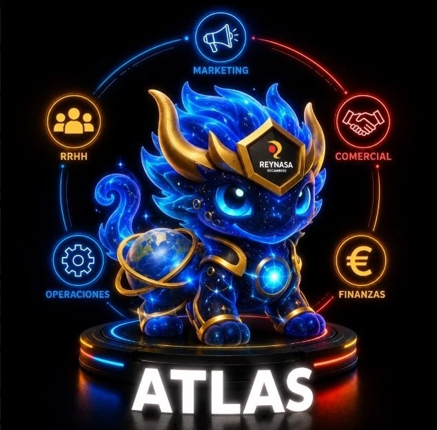

ATLAS,
el agente
de la empresa
Cualquier persona de Reynasa le escribe a su buzón con un encargo y sus archivos, y ATLAS le devuelve el resultado listo. Desde la última actualización es el único agente: Rex se ha desactivado para no tener dos agentes en el mismo equipo, y ATLAS lleva toda la carga.
De las pruebas a toda la empresa
El 7 % restante no es trabajo mal hecho: son correos que no eran encargos (respuestas automáticas, boletines, agradecimientos), encargos que pasó a una persona o bloqueó por seguridad, y unos pocos que se quedaron sin respuesta por cortes de conexión del equipo.
Encargos por mes · resto de la empresa Rubén, poniéndolo a punto
El porcentaje es la parte de los encargos que hacen otras personas. Además de los de la plantilla, Rubén le hizo unos 2.200 de pruebas y puesta a punto. * Junio desde el día 18 y octubre hasta el 26.
Quién lo usa y para qué
Por área
Lo que más se le pide
Un encargo puede contar en más de un tipo (por ejemplo, un informe de ventas).
Trabaja todo el día, de lunes a domingo
Necesito que contrastes una factura con las líneas metidas en nuestro sistema.
Un Excel con cada diferencia de referencia, cantidad o precio.
Dame un resumen de los clientes que están facturando menos que el año anterior, expresado en porcentaje.
El listado de clientes que bajan, con el porcentaje y un resumen.
Dame una presentación con las subidas y bajadas de unidades e importes de venta de cada familia.
La presentación por familias, lista para enviar.
Sácame un resumen de la presentación al consejo de dirección.
Un resumen ejecutivo en PDF.
El caso de Compras Urgentes
Deja los datos en una carpeta, recibe el informe por correo
Son ideas para probar: vale para toda la empresa, y el siguiente paso es montarlo con un caso real.
Un solo agente, con cuenta de empresa
Para que sepan que esto existe y le saquen el máximo partido. Hoy lo usan 25 personas al mes, casi todas de Compras y Comercial.
Y despuésElegir un área piloto para la primera rutina con Drive. Y cuando llegue el sobremesa nuevo, Rex vuelve en él para otro tipo de tareas, sin compartir equipo con ATLAS.